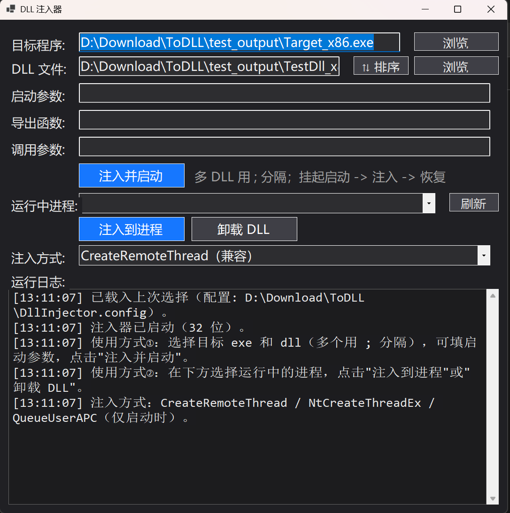

从启动时注入到运行中进程管理，覆盖完整的注入 / 卸载闭环。
直观的 WinForms 界面，支持直接把文件拖拽进输入框（多文件一次拖入）。
以CREATE_SUSPENDED挂起方式启动目标 → 批量注入 DLL → 恢复主线程运行。
DLL 输入框内用 ; 分隔多个 DLL，一次全部注入；「⇅ 排序」对话框支持拖拽 / 上移 / 下移调整注入顺序。
刷新枚举进程（名称 + PID），选中后一键注入（OpenProcess + 远程 LoadLibraryW）。
注入成功后自动远程调用指定导出函数（如 InstallHook / Init）；可传单个字符串参数，或用 || 传多个参数（DLL 侧按字符串指针数组接收），并记录函数返回码。
远程调用 FreeLibrary 卸载，注入 / 卸载闭环；64 位进程基址完整枚举，卸载可靠。
注入后自动在目标进程模块列表核对 DLL 是否真正加载成功（带重试容忍枚举时序）。
CreateRemoteThread（兼容）· NtCreateThreadEx（隐蔽）· QueueUserAPC（仅启动时）。
注入器按目标位数分版，位数自动校验，不匹配时拦截并给出清晰提示。
非管理员启动自动弹出 UAC 提权；取消则按普通权限继续，注入普通进程无需提权。
自动记住上次的 exe / dll（多 DLL 完整记忆）、注入方式与窗口位置，下次启动直接带出。
DLL 路径以 UTF-16 写入远程进程，中文目录 / 文件名完全兼容。
-inject / -injectpid / -eject，支持多 DLL、注入方式与 -export 导出函数调用，退出码明确区分成败。
深色主题界面：输入区、功能按钮区、进程选择区、注入方式区与运行日志区一目了然。

界面截图 · 暗色主题 · 运行日志实时显示每一步注入结果
从 Releases 下载对应位数版本，把目标 exe / dll 与注入器放在同一目录即可使用。
启动目标程序并注入 DLL，适用于插件 / MOD / 调试等场景。
; 分隔）InstallHook）与「调用参数」（单个字符串，或用 || 分隔多个参数）向已运行的进程注入，无需重启目标程序。
把目标进程中已加载的 DLL 卸载掉，形成闭环。
# 命令行模式（自动化 / 脚本） DllInjector-x64.exe -inject <exe路径> <dll1> [dll2 ...] [-args <参数>] [-method crt|ntc|apc] [-export <函数>] [-exportarg <参数>] DllInjector-x64.exe -injectpid <pid> <dll1> [dll2 ...] [-method crt|ntc] [-export <函数>] [-exportarg <参数>] DllInjector-x64.exe -eject <pid> <dll文件名>
经典远程线程注入流程：进程外分配内存 → 写入 DLL 路径 → 远程加载 → 恢复运行 → 核验。
三种注入方式在不同场景下的适用性与特性差异。
| 方式 | 启动时注入 | 运行中进程 | 特点 |
|---|---|---|---|
CreateRemoteThread |
✔ | ✔ | 兼容性最好，最常见的注入手法，较易被检测 |
NtCreateThreadEx |
✔ | ✔ | 直接调用 ntdll 底层线程创建，绕过部分 API 钩子，隐蔽性较好 |
QueueUserAPC |
✔（推荐） | ✘（自动降级 CRT） | 不创建新线程，隐蔽性最好；要求目标主线程处于可告警等待，否则 APC 不会执行 |
需要 .NET 8 SDK，一条命令构建 x64 / x86 双版本；也可使用仓库内置 GitHub Actions 自动构建。
# 一键构建（x64 + x86） build.bat # 或使用 CI：打 v* 标签自动构建并发布 Release git tag v1.0.0 && git push origin v1.0.0